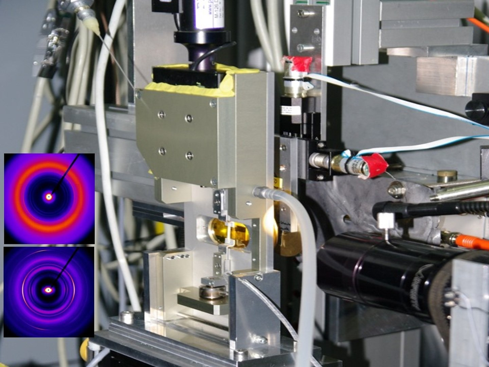

Laboratory on Polymer Materials & Organ Printing
Polymer Materials
& Organ Printing
We design bioinspired polymeric materials with targeted functionalities for technological and biomedical solutions. Through 3D cell printing we develop biomaterials that interact with tissues and support their regeneration

01 MEET ANAYANCY OSORIO
The scientist behind the lab
02 Research
Materials inspired by nature
Current research topics
03 Publications
Selected output
For a complete publications list go to:
04 Teaching
Passing the craft
05 OUR PEOPLE
The people behind

05.1 Alumni
Former members
06 IN THE MEDIA
Stories about us
07 NEWS
Latest news
Thesis defences, awards, conferences and more — this section will be updated soon.
08 Contact & Lead
Let's talk
Interested in collaborating, joining the group, or a research stay?
anayancy.osorio-madrazo@uni-bayreuth.de
anayancy.osorio-madrazo@uni-bayreuth.de
Laboratory Head
Dr. Anayancy Osorio Madrazo, PhD
Address
Universitätstr. 30, NW IV
95447 Bayreuth, Germany